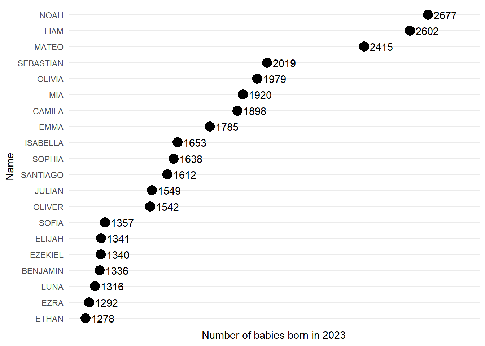
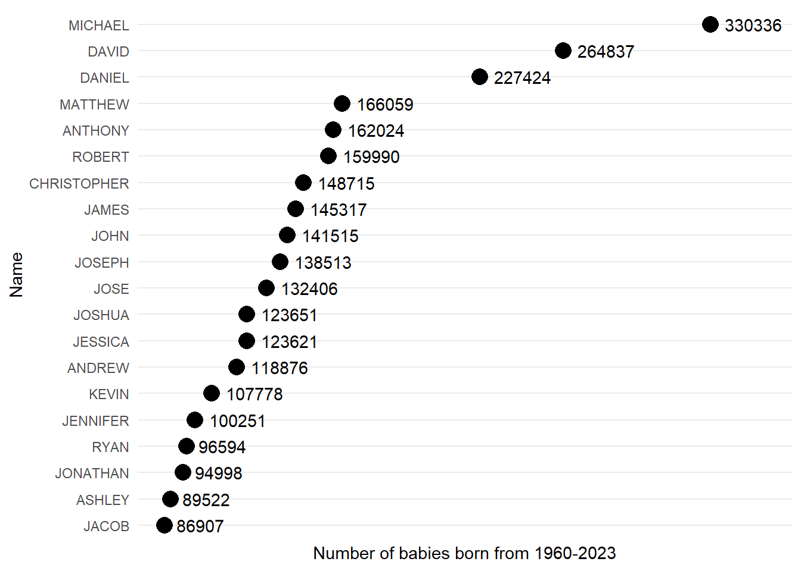
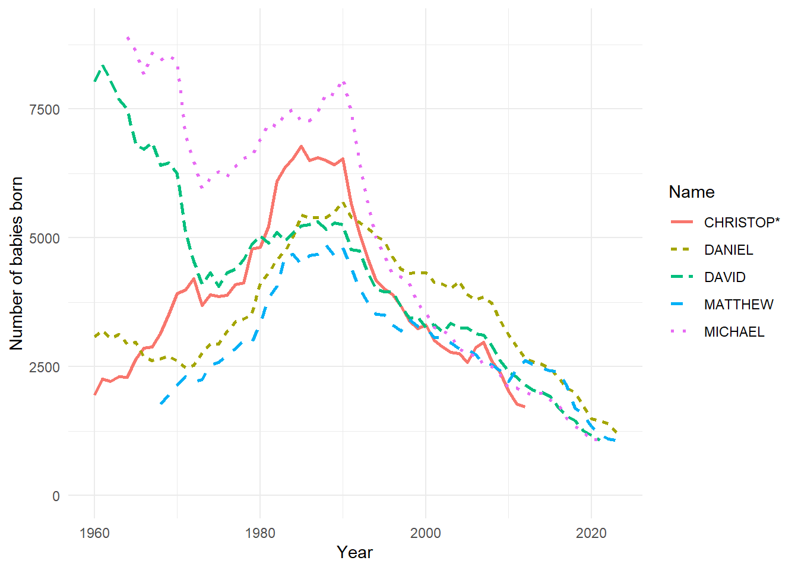

library(tidyverse)Data 200: Lab 4a
Return to the popular baby names data
Lab 1a
Now we have the knowledge to understand the code from lab 1a!
Preface
In this lab we explored popular baby names for the state of California. This data comes from California birth certificates and is available on the California Open Data Portal.
Obtain and familiarize yourself with the data
This data is read in from a file called california-popular-baby-names.csv available online. We will save this data into an object called baby-names.
baby_names <- read_csv("http://csuci-data200.github.io/lectures/week-01/data/california-popular-baby-names.csv")Let’s look at what is in our baby_names object.
baby_names# A tibble: 3,203 × 5
Year Sex Rank Name Count
<dbl> <chr> <dbl> <chr> <dbl>
1 1960 Female 1 SUSAN 3299
2 1960 Female 2 MARY 3248
3 1960 Female 3 KAREN 3156
4 1960 Female 4 CYNTHIA 2982
5 1960 Female 5 LISA 2839
6 1960 Female 6 LINDA 2807
7 1960 Female 7 DEBRA 2692
8 1960 Female 8 PATRICIA* 2668
9 1960 Female 9 DEBORAH 2490
10 1960 Female 10 SANDRA 2404
# ℹ 3,193 more rowsThis dataset has 5 columns and 3,203 rows in total, which would be a lot to print, so only the first 10 are displayed.
For each year and specified sex at birth this data contains the 25 most popular baby first names and counts. We have data for each year from 1960 to 2023.
Let’s use this data to explore some questions.
What were the 20 most popular baby names in 2023?
baby_names |>
filter(Year == 2023) |>
arrange(desc(Count)) |>
slice(1:20) |>
ggplot(aes(x = Count, y = reorder(Name, Count))) +
geom_count() +
geom_text(aes(label = Count), hjust = -0.25) +
theme_minimal() +
theme(legend.position = "none") +
labs(
x = "Number of babies born in 2023",
y = "Name"
) +
scale_x_discrete(expand = expansion(mult = c(0.05, 0.15)))
What were the 20 most popular baby names in the year you were born?
In the Quarto document change the “2023” below to the year you were born and render the html again.
baby_names |>
filter(Year == 2023) |>
arrange(desc(Count)) |>
slice(1:20) |>
ggplot(aes(x = Count, y = reorder(Name, Count))) +
geom_count() +
geom_text(aes(label = Count), hjust = -0.25) +
theme_minimal() +
theme(legend.position = "none") +
labs(
x = "Number of babies born in 2023",
y = "Name"
) +
scale_x_discrete(expand = expansion(mult = c(0.05, 0.15)))What are the top 20 most popular baby names overall from all babies born between 1960-2023?
all_names_plot <- baby_names |>
group_by(Name) |>
summarise(total_count = sum(Count)) |>
arrange(desc(total_count)) |>
slice(1:20) |>
ggplot(aes(x = total_count, y = reorder(Name, total_count))) +
geom_count() +
geom_text(aes(label = total_count), hjust = -0.25) +
theme_minimal() +
theme(legend.position = "none") +
labs(
x = "Number of babies born from 1960-2023",
y = "Name"
) +
scale_x_discrete(expand = expansion(mult = c(0.05, 0.15)))
all_names_plot
Is your name in the list of the most popular baby names?
baby_names |>
pull(Name) |>
unique() |>
sort() [1] "AARON" "ABIGAIL" "ADAM" "ADRIAN" "AIDEN"
[6] "ALEXA" "ALEXANDER" "ALEXANDRA" "ALEXIS" "ALLISON"
[11] "ALYSSA" "AMANDA" "AMBER" "AMELIA" "AMY"
[16] "ANDREA" "ANDREW" "ANGEL" "ANGELA" "ANGELINA"
[21] "ANTHONY" "ARIA" "ASHLEY" "AUDREY" "AUSTIN"
[26] "AVA" "AVERY" "BARBARA" "BELLA" "BENJAMIN"
[31] "BRANDON" "BRIAN" "BRIANNA" "BRITTANY" "CAMILA"
[36] "CARLOS" "CAROL" "CHARLES" "CHARLOTTE" "CHELSEA"
[41] "CHERYL" "CHLOE" "CHRISTIAN" "CHRISTIN*" "CHRISTINA"
[46] "CHRISTOP*" "CHRISTOPHER" "CRYSTAL" "CYNTHIA" "DANIEL"
[51] "DANIELLE" "DAVID" "DAWN" "DEBORAH" "DEBRA"
[56] "DENISE" "DESTINY" "DIANA" "DIEGO" "DONALD"
[61] "DONNA" "DYLAN" "ELIANA" "ELIAS" "ELIJAH"
[66] "ELIZABET*" "ELIZABETH" "ELLA" "EMILY" "EMMA"
[71] "ERIC" "ERIN" "ETHAN" "EVELYN" "EZEKIEL"
[76] "EZRA" "GABRIEL" "GENESIS" "GIANNA" "GRACE"
[81] "GREGORY" "HAILEY" "HANNAH" "HEATHER" "ISAAC"
[86] "ISABELLA" "JACOB" "JACQUELINE" "JAMES" "JAMIE"
[91] "JASMINE" "JASON" "JAYDEN" "JEFFREY" "JENNIFER"
[96] "JENNIFER*" "JEREMY" "JESSICA" "JESUS" "JOCELYN"
[101] "JOHN" "JONATHAN" "JOSE" "JOSEPH" "JOSHUA"
[106] "JUAN" "JULIAN" "JULIE" "JUSTIN" "KAREN"
[111] "KATHERINE" "KATHLEEN*" "KAYLA" "KELLY" "KENNETH"
[116] "KEVIN" "KIMBERLY" "KIMBERLY*" "KYLE" "LAURA"
[121] "LAUREN" "LAYLA" "LEO" "LESLIE" "LEVI"
[126] "LIAM" "LILY" "LINDA" "LISA" "LOGAN"
[131] "LORI" "LUCA" "LUCAS" "LUIS" "LUNA"
[136] "MADISON" "MARIA" "MARK" "MARY" "MASON"
[141] "MATEO" "MATTHEW" "MAYA" "MEGAN" "MELANIE"
[146] "MELISSA" "MIA" "MICHAEL" "MICHELE" "MICHELLE"
[151] "MICHELLE*" "MILA" "MONICA" "NANCY" "NATALIA"
[156] "NATALIE" "NATHAN" "NICHOLAS" "NICOLE" "NOAH"
[161] "OLIVER" "OLIVIA" "PAMELA" "PATRICIA*" "PAUL"
[166] "PENELOPE" "RACHEL" "REBECCA" "RICHARD" "ROBERT"
[171] "ROBIN" "RONALD" "RYAN" "SAMANTHA" "SANDRA"
[176] "SANTIAGO" "SARA" "SARAH" "SCARLETT" "SCOTT"
[181] "SEBASTIAN" "SHANNON" "SOFIA" "SOPHIA" "STEPHANI*"
[186] "STEPHANIE" "STEVEN" "SUSAN" "TAMMY" "TAYLOR"
[191] "TERESA" "THEODORE" "THOMAS" "TIFFANY" "TIMOTHY"
[196] "TINA" "TRACY" "TYLER" "VALENTINA" "VALERIA"
[201] "VANESSA" "VERONICA" "VERONICA*" "VICTORIA" "VIOLET"
[206] "WENDY" "WILLIAM" "ZOE" Are the top 20 most popular baby names overall the same when we correct for truncation?
If you look into the data dictionary it says: Names in records from data years 1960 through 1977 are truncated to 8 characters, and 1978 through 2017 are truncated to 12 characters. For example, the names CHRISTINA, CHRISTINE, and CHRISTIN would all be included in CHRISTIN.*
When we look at names across the entire time period we may get different results if we truncated all names to 8 characters. This truncation is accounted for in the plot below.
baby_names <- baby_names |>
mutate(name_fixed = case_when(
str_length(Name) > 8 ~ (str_trunc(Name, width = 9, ellipsis = "*")),
str_length(Name) <= 8 ~ Name
))
corrected_all_names_plot <- baby_names |>
group_by(name_fixed) |>
summarise(total_count = sum(Count)) |>
arrange(desc(total_count)) |>
slice(1:20) |>
ggplot(aes(x = total_count, y = reorder(name_fixed, total_count))) +
geom_count() +
geom_text(aes(label = total_count), hjust = -0.25) +
theme_minimal() +
theme(legend.position = "none") +
labs(
x = "Number of babies born from 1960-2023",
y = "Corrected names"
) +
scale_x_discrete(expand = expansion(mult = c(0.05, 0.15)))
gridExtra::grid.arrange(all_names_plot, corrected_all_names_plot, ncol = 2)
How did the 5 overall most popular names change over the years?
most_popular_names <- baby_names |>
group_by(name_fixed) |>
summarise(total_count = sum(Count)) |>
arrange(desc(total_count)) |>
slice(1:5) |>
pull(name_fixed)
baby_names |>
filter(name_fixed %in% most_popular_names) |>
ggplot(aes(x = Year, y = Count, color = name_fixed, linetype = name_fixed)) +
geom_line(linewidth = 1) +
theme_minimal() +
labs(
x = "Year",
y = "Number of babies born",
color = "Name",
linetype = "Name"
) +
ylim(0, 9000)
New explorations
Question 1
Let’s start by cleaning up the variable names in the baby_names data frame to follow tidyverse style guide.
Question 2
Let’s clean up the data by dropping the variable sex and converting th variable year to an integer R type.
Question 3
What is the average yearly number of babies born between the years 2000-2020 with the name “Daniel”?” Make sure to answer using inline R code.
Question 4
Produce a plot to show how the number of babies named “Ashley” changed over the years. Make sure to provide nice axis labels, alternate text, and caption.